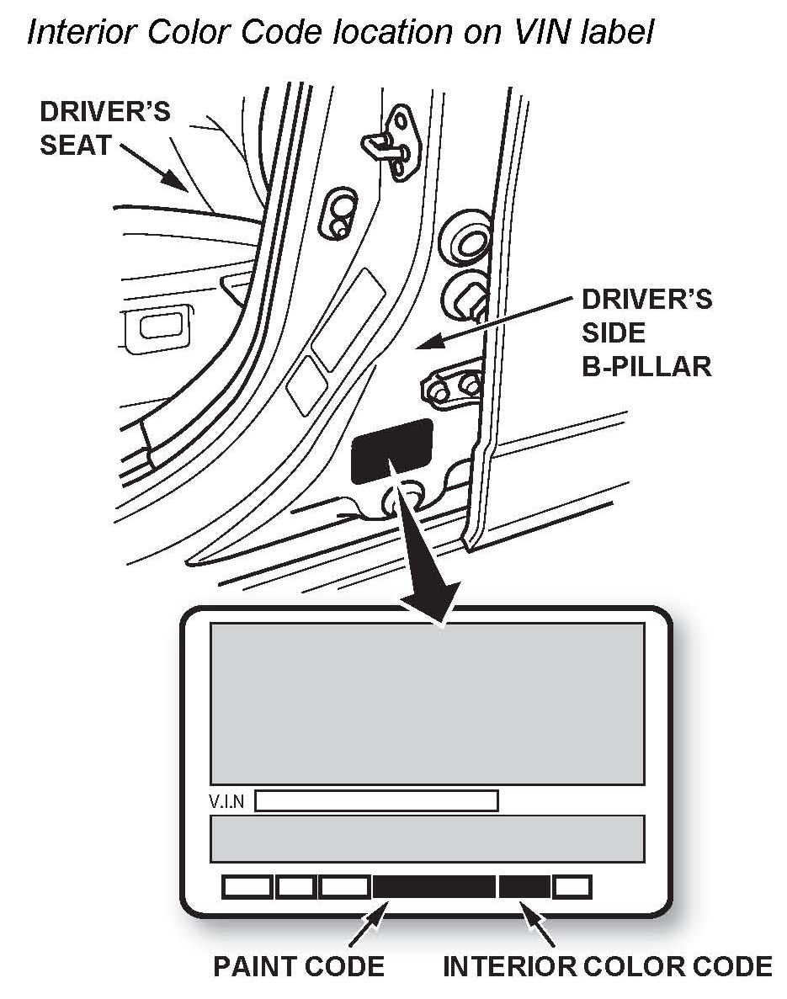
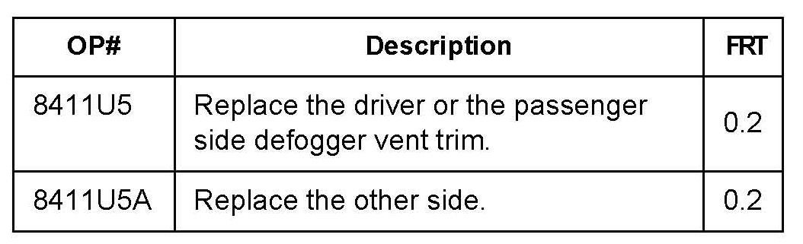
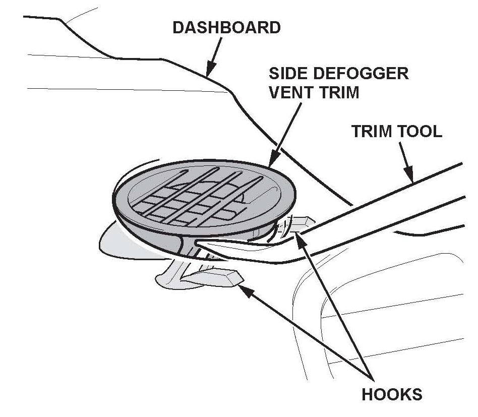
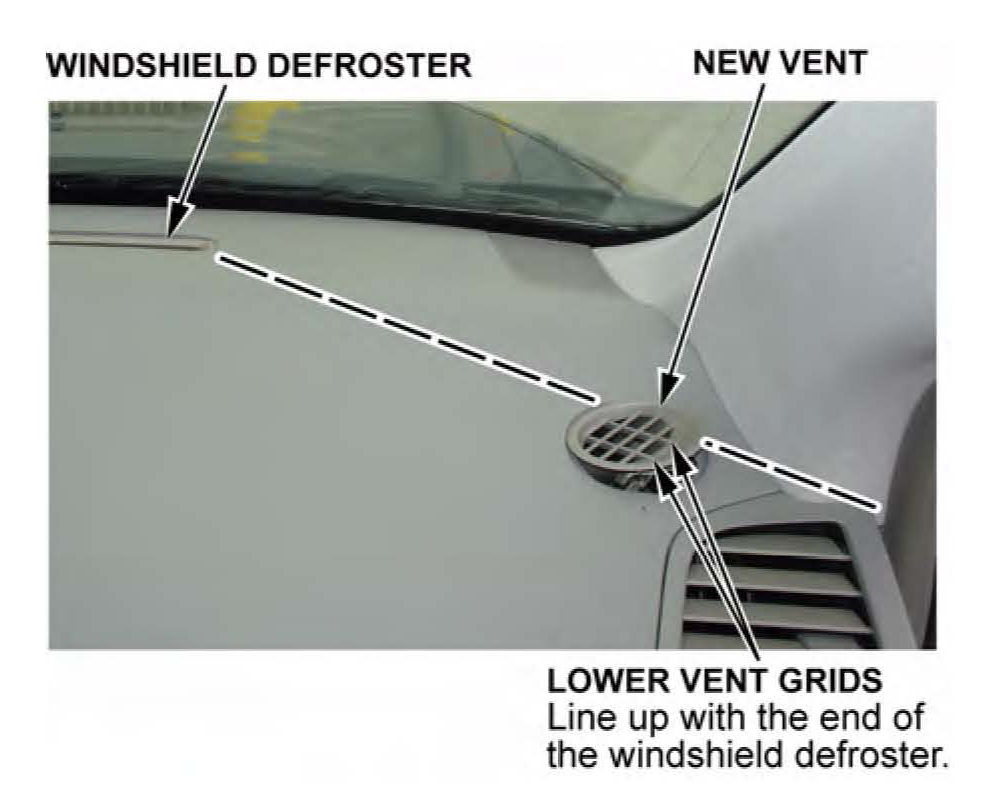
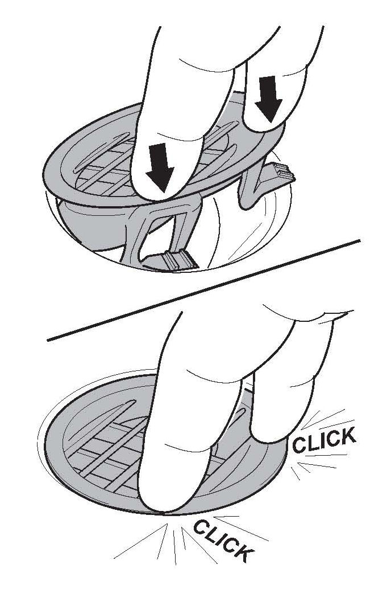

A/C, Interior - Side Defogger Vent Pops Up From Dashboard
12-030August 22, 2012
Applies To:
2007-11 MDX - ALL
Side Defogger Vent Trim Pops Up From Dashboard
SYMPTOM
The side defogger vent trim pops up from the dashboard.
PROBABLE CAUSE
The locking tabs on the vent trim have inadequate strength to hold the vent trim securely to the dashboard.
CORRECTIVE ACTION
Replace any loose vent trim.
PARTS INFORMATION

NOTE:
Verify the proper part number by using the VIN or the Interior Color Code ("Clr Label" in the Parts Catalog) found on the label located near the bottom of the driver's side B-pillar.
Driver's Side Defogger Vent Trim
P/N 77475-STX-A00ZA (NH167L, Graphite Black)
P/N 77475-STX-A00ZB (NH557L, Medium Grey)
P/N 77475-STX-A00ZC (YR292L, Beige)
P/N 77475-STX-A00ZD (NH69OL, Black)
Passenger's Side Defogger Vent Trim
P/N 77470-STX-A00ZA (NH167L, Graphite Black)
P/N 77470-STX-A00ZB (NH557L, Medium Grey)
P/N 77470-STX-A00ZC (YR292L, Beige)
P/N 77470-STX-A00ZD (NH690L, Black)
TOOL INFORMATION
KTC Trim Tool Set: P/N SOJATP2O14
Available through the Acura Tool and Equipment Program; call.

WARRANTY CLAIM INFORMATION
Failed Part: 77475-STX-A00ZB
Defect Code: 01101
Symptom Code: 07302
Skill Level: Repair Technician
REPAIR PROCEDURE
NOTE:
^ Read and understand this procedure before starting. The new vent trim must not be removed once it has been installed. The hooks on the vent trim cannot withstand repeated removal and installation. When any vent trim has been removed, replace it with a brand new vent trim that has never been installed.
^ Replace the loose vent trim only; do NOT replace any secure vent trim.
^ Make sure the new vent trim is properly aligned, or the side windows may not defrost properly.
^ Take care not to scratch the dashboard or the A-pillar trim.
^ Use the appropriate tool from the KTC trim tool set to avoid damage when removing components.
^ The passenger's side defogger vent trim is shown; the driver's side defogger vent trim is similar.

1. Insert the trim tool between the side defogger vent trim and the dashboard, then release the hooks. Remove the vent trim.

2. Line up the two lower vent grids of the new vent trim with the edge of the windshield defroster vent or at a 45-degree angle to the A-pillar trim.

3. Press the new vent trim slowly and firmly into place directly above the two hooks. Listen for two clicks. Make sure the new vent trim is secure by gently lifting it from the dash with your fingers.

Disclaimer